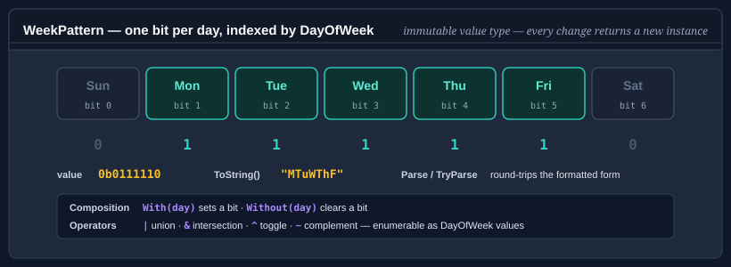

WeekPattern
WeekPattern is an immutable value-type bitmask representing a set of selected days in a standard seven-day week. It supports non-destructive composition, bitwise operators, string parsing, formatting, and enumeration — making it a natural primitive for schedules, recurrence rules, and working-day calculations.
Because WeekPattern is a value type, every operation that changes the selection returns a new instance rather than mutating the receiver.

Pattern 1 — build a pattern with With / Without
using Bodu;
WeekPattern weekdays = WeekPattern.Empty
.With(DayOfWeek.Monday)
.With(DayOfWeek.Tuesday)
.With(DayOfWeek.Wednesday)
.With(DayOfWeek.Thursday)
.With(DayOfWeek.Friday);
Console.WriteLine(weekdays.Count); // 5
Console.WriteLine(weekdays.Contains(DayOfWeek.Monday)); // True
Console.WriteLine(weekdays.Contains(DayOfWeek.Sunday)); // False
Pattern 2 — use the built-in well-known patterns
using Bodu;
WeekPattern workweek = WeekPattern.Weekdays; // Mon–Fri
WeekPattern weekend = WeekPattern.Weekend; // Sat–Sun
WeekPattern allDays = WeekPattern.AllDays; // Mon–Sun
WeekPattern empty = WeekPattern.Empty; // no days
// Regional working weeks, one preset per WorkingDaysOfWeek member.
WeekPattern gulf = WeekPattern.SundayToThursday; // Sun–Thu
WeekPattern sixDay = WeekPattern.MondayToSaturday; // Mon–Sat
Pattern 3 — bitwise combination
The |, &, and ~ operators compose or intersect patterns:
using Bodu;
WeekPattern mon = WeekPattern.Empty.With(DayOfWeek.Monday);
WeekPattern fri = WeekPattern.Empty.With(DayOfWeek.Friday);
WeekPattern monFri = mon | fri;
// Intersect with weekdays to strip any weekend days.
WeekPattern safeSchedule = monFri & WeekPattern.Weekdays;
// Invert — days NOT in the pattern.
WeekPattern nonWorking = ~WeekPattern.Weekdays; // Sat–Sun
All four bitwise operators are defined: | (union), & (intersection), ^ (symmetric difference — days in exactly one operand), and ~ (complement within the seven-day week). Symmetric difference is handy for "which days changed" between two schedules:
WeekPattern oldShift = WeekPattern.Parse("_MTW___");
WeekPattern newShift = WeekPattern.Parse("__TWT__");
WeekPattern changed = oldShift ^ newShift; // Mon and Thu — the days that differ
Comparing patterns
WeekPattern implements IEquatable<WeekPattern> and IComparable<WeekPattern>, and defines ==, !=, <, <=, >, >=. Two patterns are equal when they select the same days; the ordering operators compare the underlying bitmask, so they give a total order suitable for sorting or use as a dictionary key — they are not a subset relation. Use &/== to test containment ((a & b) == b means "a contains all of b").
Pattern 4 — parse from a compact string
WeekPattern.Parse accepts standard abbreviations (case-insensitive):
using Bodu;
WeekPattern mwf = WeekPattern.Parse("_M_W_F_"); // Mon, Wed, Fri (Sunday-first mask)
WeekPattern tuth = WeekPattern.Parse("__T_T__"); // Tue, Thu
WeekPattern all = WeekPattern.Parse("SMTWTFS"); // every day
bool ok = WeekPattern.TryParse("MF", out WeekPattern result);
Pattern 5 — enumerate selected days
WeekPattern implements IEnumerable<DayOfWeek>, always yielding selected days in DayOfWeek order (Sunday = 0 first, unless the first day of the week is configured otherwise):
using Bodu;
WeekPattern schedule = WeekPattern.Parse("_MTWTF_");
foreach (DayOfWeek day in schedule)
Console.WriteLine(day);
// Monday, Tuesday, Wednesday, Thursday, Friday
Pattern 6 — remove a day
using Bodu;
WeekPattern fiveDays = WeekPattern.Weekdays;
WeekPattern fourDays = fiveDays.Without(DayOfWeek.Friday);
Console.WriteLine(fourDays.Count); // 4
Pattern 7 — schedule a recurring date using WeekPattern
using Bodu;
// Find all Tuesdays and Thursdays in April 2025.
WeekPattern tuthu = WeekPattern.Empty
.With(DayOfWeek.Tuesday)
.With(DayOfWeek.Thursday);
DateOnly start = new DateOnly(2025, 4, 1);
DateOnly end = new DateOnly(2025, 4, 30);
for (DateOnly d = start; d <= end; d = d.AddDays(1))
{
if (tuthu.Contains(d.DayOfWeek))
Console.WriteLine(d);
}
Pattern 8 — bridge to and from WorkingDaysOfWeek
WorkingDaysOfWeek is the companion enum naming the common working-week presets (MondayToFriday, SaturdayToThursday, …). Convert between the two through the extension methods on WorkingDaysOfWeekExtensions — useful when an API takes the named preset but you need the raw day set (or vice versa):
using Bodu;
using Bodu.Extensions;
WeekPattern saudiWeek = WorkingDaysOfWeek.SaturdayToWednesday.ToWeekPattern();
WorkingDaysOfWeek back = WeekPattern.Weekdays.ToWorkingDaysOfWeek(); // MondayToFriday
API summary
| Member | Description |
|---|---|
Empty |
Static field — no days selected. |
Weekdays |
Static field — Mon–Fri. |
Weekend |
Static field — Sat–Sun. |
AllDays |
Static field — every day, Mon–Sun. |
MondayToFriday, MondayToSaturday, MondayToThursdayAndSaturday, SaturdayToThursday, SaturdayToWednesday, SundayToFriday, SundayToThursday |
Static fields — the regional working-week presets, one per WorkingDaysOfWeek member (MondayToFriday is the same set as Weekdays). |
With(DayOfWeek) |
Returns a new pattern with the day added. |
Without(DayOfWeek) |
Returns a new pattern with the day removed. |
Contains(DayOfWeek) |
Returns true if the day is selected. |
Count |
Number of selected days (0–7). |
Parse(string) |
Parses a compact abbreviation string. Throws on invalid input. |
TryParse(string, out WeekPattern) |
Parses without throwing. |
ToString() |
Returns the compact abbreviation string. |
\|, &, ^, ~ |
Union, intersection, symmetric-difference, complement operators. |
==, !=, <, <=, >, >= |
Equality (same day set) and total-order comparison of the bitmask. |
IComparable<WeekPattern>, IComparable<byte>, IComparable |
CompareTo over the bitmask — the same total order the comparison operators use, so patterns sort with OrderBy and SortedSet<WeekPattern>. |
IEnumerable<DayOfWeek> |
Enumerates selected days in DayOfWeek order. |
Where to go next
- Circular buffer — fixed-capacity FIFO ring buffer.
- Evicting dictionary — capacity-bounded dictionary with FIFO / LRU / LFU eviction.
- Bodu.Collections.Generic API reference — full namespace overview.
- Core Foundations guides — every guide in this topic.